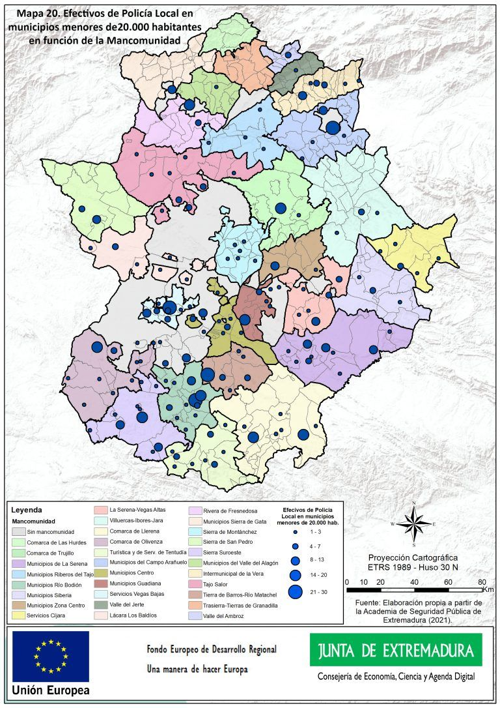
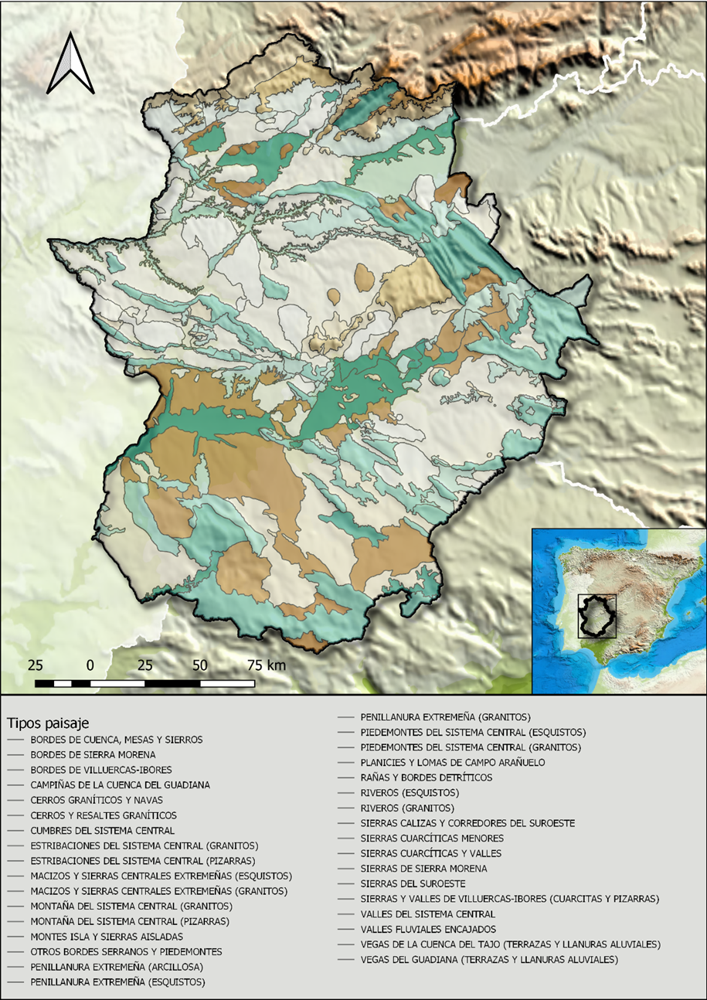
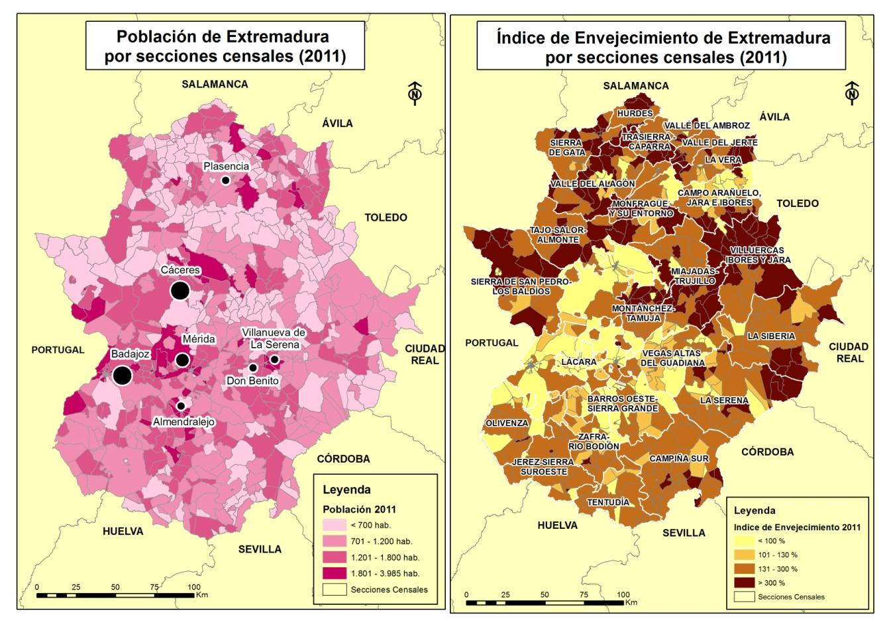

Los mapas temáticos pueden representar información cuantitativa o cualitativa.
Dependiendo del tipo de mapa se emplearán metodologías diferentes.
1- Captura de datos
- En el caso de mapas cuantitativos:
- Observación directa por coordenadas.
- Sensores (como contadores de tráfico o medidores de temperatura).
- Bases de datos como el Instituto Nacional de Estadística.
- En el caso de mapas cualitativos:
- Observación directa por coordenadas.
- Sensores remotos (teledetección).
2- Análisis
En algunas ocasiones, es necesario un análisis de los datos, puesto que no se van a representar los datos directamente
Por ejemplo, un mapa de densidad de población.
3- Representación de la información
Asignando colores o patrones, asignando categorías y definiendo siempre una leyenda de representación.
Muestran aspectos espaciales de datos en escalas de medida ordinales o de intervalo; es decir, establecen relaciones de cantidad.

Representan condiciones, cualidades o características del terreno no mensurables.

